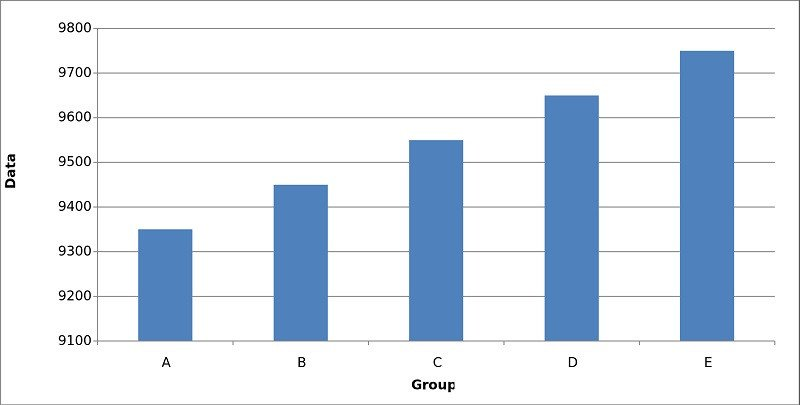
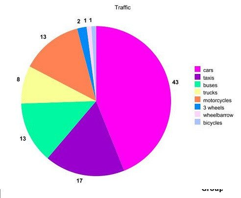
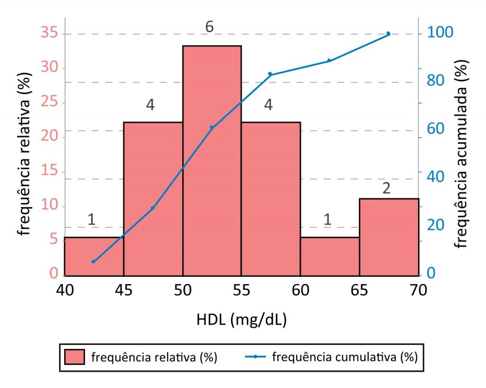
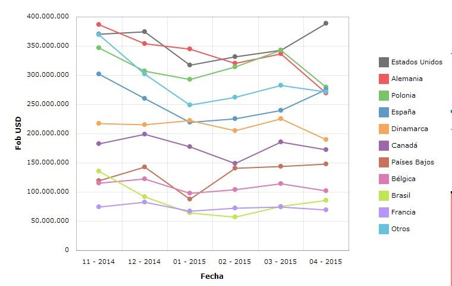

Regresar
Regresar
Aprende sobre las graficas
aqui te ayudaremos :D
Aprende con tus papas es mas divertido
Un gráfico es la representación de datos, generalmente numéricos, mediante líneas, superficies o símbolos, para ver la relación que esos datos guardan entre sí y facilitar su interpretación.
Un grafico también puede ser un conjunto de puntos, que se plasman en coordenadas cartesianas, y sirven para analizar el comportamiento de un proceso, o un conjunto de elementos.
Características:
- Las representaciones gráficas nos permiten conocer, analizar y comparar visual y rápidamente datos sobre la evolución de una o varias magnitudes, a lo largo del tiempo, en uno o en distintos lugares.
- Facilitan la comprensión de los hechos y las relaciones que existen entre ellos.
- Las representaciones se realizan en forma proporcionada.
1. Gráfico de barras
El más conocido y utilizado de todos los tipos de gráficos es el gráfico o diagrama de barras.
En éste, se presentan los datos en forma de barras contenidas en dos ejes cartesianos (coordenada y abscisa) que indican los diferentes valores.
El aspecto visual que nos indica los datos es la longitud de dichas barras, no siendo importante su grosor.

2. Gráfico circular o por sectores
El también muy habitual gráfico en forma de “quesito”, en este caso la representación
de los datos se lleva a cabo mediante la división de un círculo en tantas partes como valores de la variable investigada y teniendo cada parte un tamaño proporcional a su frecuencia dentro del total de los datos

3. Histograma
Aunque a simple vista muy semejante al gráfico de barras, el histograma es uno de los tipos de gráfica que a nivel estadístico resulta más importante y fiable.

4. Gráfico de líneas
En este tipo de gráfico se emplean líneas para delimitar el valor de una variable dependiente respecto a otra independiente.
